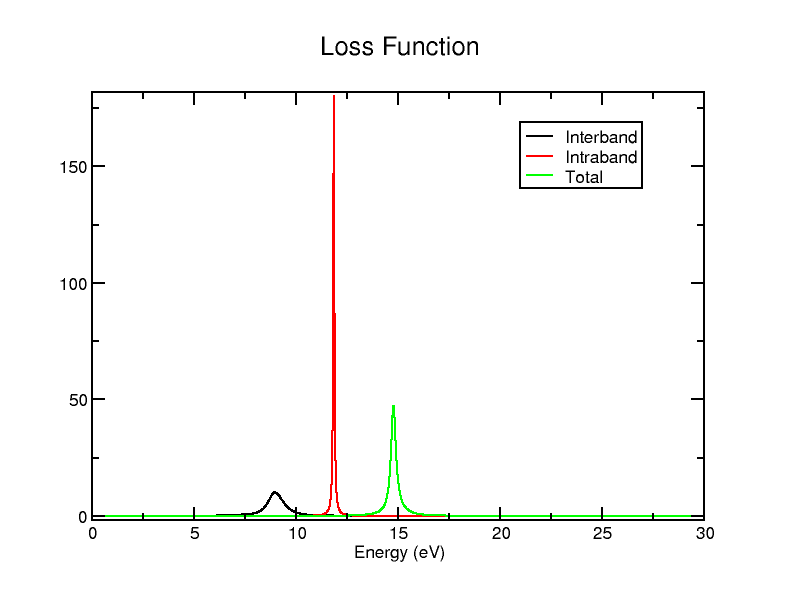

光学：铝
在本教程中，我们将简要了解如何计算金属的光学性质，以铝为例，并探讨其结果与标准Optados光学计算之间的差异。强烈建议您首先阅读以下内容。 上一个教程，其中我们对其有更深入的讲解——本教程主要只是强调它在金属中的差异。
我们将使用 cell 文件
Al.cell
%BLOCK LATTICE_CART
4.050000000000000 0.000000000000000 0.000000000000000
0.000000000000000 4.050000000000000 0.000000000000000
0.000000000000000 0.000000000000000 4.050000000000000
%ENDBLOCK LATTICE_CART
%BLOCK POSITIONS_FRAC
Al 0.0000000000000000 0.0000000000000000 0.0000000000000000
Al 0.5000000000000000 0.5000000000000000 0.0000000000000000
Al 0.5000000000000000 0.0000000000000000 0.5000000000000000
Al 0.0000000000000000 0.5000000000000000 0.5000000000000000
%ENDBLOCK POSITIONS_FRAC
KPOINTS_MP_GRID 15 15 15
SPECTRAL_KPOINTS_MP_GRID 15 15 15
SYMMETRY_GENERATE
并且 param 文件
Al.param
按常规运行 Castep。然后使用 Optados 输入文件运行 Optados。
Al.odi
TASK : optics
JDOS_SPACING : 0.01
JDOS_MAX_ENERGY : 30
OPTICS_INTRABAND : true
EFERMI : optados
DOS_SPACING : 0.1
ADAPTIVE_SMEARING : 0.8
BROADENING : adaptive # Default
OPTICS_GEOM : polycrystalline # Default
OPTICS_INTRABAND : true。这包括带内贡献，这对于金属是必要的。
我们从较大的间距开始，这样只会得到少量结果（仅在三个能量点测量）——这使得我们可以快速查看当前情况。我们将使用这些结果完成本教程的其余部分。
介电数据文件
该文件 Al_epsilon.dat 包含以下数据：
0.0000000000000000 2.1445746376579851 0.0000000000000000
15.000000000000000 1.1673581523361172 1.6007294583641971
30.000000000000000 0.66031465886470098 0.39432835642313052
0.0000000000000000 -32490.319172606654 NaN
15.000000000000000 0.37438389209757406 2.7452531094084771E-003
30.000000000000000 0.84359371433743857 3.4316159432482577E-004
0.0000000000000000 -32489.174597968995 NaN
15.000000000000000 0.54174204443369112 1.6034747114736059
30.000000000000000 0.50390837320213944 0.39467151801745531
你可以在这里看到，这里有三列，和之前一样（能量、实介电常数和虚介电常数），但有三组这样的列，由双空格分隔。第一组st 设对应于带间贡献，2并 到带内，以及 3rd 总计。尽管通常通过绘制图表来可视化这些数据会更简单， agr 文件在xmgrace中，这只会给出带间项——如果你希望获得其他信息，则必须使用该 .dat 文件。
你可以选择使用/绘制这些数据，但本教程将为你提供使用xmgrace绘制这些数据所需的文件。首先，我们将创建一个名为 Al_epsilon_sep.dat 文件将数据分离成列——我们可以用 这个 Python 脚本输出文件看起来像
0.0000000000000000 2.1445746376579851 0.0000000000000000 -32490.3191726066543197 0.0000000000000000 -32489.1745979689949309 0.0000000000000000
15.0000000000000000 1.1673581523361172 1.6007294583641971 0.3743838920975741 0.0027452531094085 0.5417420444336911 1.6034747114736059
30.0000000000000000 0.6603146588647010 0.3943283564231305 0.8435937143374386 0.0003431615943248 0.5039083732021394 0.3946715180174553
数据完全相同，只是现在所有数据都分布在单独的列中：第1列仍是能量，第2列是带间实部，第3列是带间虚部，第4列是带内实部，第5列是带内虚部，第6列是总实部，第7列是总虚部介电常数。
现在让我们绘制一些更有用的数据图：重新运行 Optados 以 JDOS_SPACING : 0.01 改为设置（以获取更多数据用于更有意义的图表），然后重新运行Python脚本。您可以使用xmgrace绘制它（并根据需要使用任何配套的批处理文件），但使用plotly（以及Bokeh来添加一些额外功能）更为方便——这是因为数值变化很大。
要重现这一点，您可以使用以下内容 Python 脚本 使用 plotly 获取基本输出，若要获得包含一些额外功能的输出（例如可以手动选择要查看的值范围），则使用 此脚本. 请确保在进行此操作时已安装所有必需的库：pandas 和 plotly 是必需的，用于第 1 部分st，且还需要 Bokeh 用于第 2并。 1st 生成一个名为的输出HTML文件 interactive_graph.html 以及 2并 生成 interactive_graph_extra.html后者在此处嵌入以供您方便使用：
或者下载 数据 并且 HTML 文件 并将其在您的浏览器中查看——或者直接在新标签页中查看该HTML链接。
加载后，图像看起来并不理想：因为接近 0eV 时数值变得非常大，图像仅仅看起来像两条直线后接零。在 HTML 中，我们将 y 轴最小值设为 -10，最大值设为 1或。现在我们可以做出一些一般性的观察。
- 在非常低的能量下，介电常数（包括实部和虚部）急剧上升/下降到极高的值——它似乎在 2 eV 左右趋于稳定。
- 虚部趋向于0，而实部趋向于一个非零的有限值
尝试将 x min 设置为 2（并将 y min 设置为 -50——仅为了避免截断）：你会发现，在超过 2 eV 之后，曲线走势相当平直。因此，让我们更详细地考察 0 到 2 eV 之间的变化情况。你可以使用 HTML 页面中提供的控件进行拖动和（框）缩放，以查看图形的不同部分。
尝试查看能量（x）在1.3到1.6之间的区域——你应该会发现那里存在一个明显的不连续性：尽管本带虚部项保持接近0，但介带部分急剧上升（达到约700），然后又下降，总和保持不变。实部也呈现出与介带贡献相似的形状，仅因本带项微小变化而略有调整。尝试在0-2eV范围内查看其他区域，看看还能发现什么。
其他文件
运行 Optados 会生成与没有其参与时相同的文件，只是部分文件有轻微差异。例如，文件 Al_epsilon.agr 仅包含带间项——它只有两列。类似地 Al_epsilon.dat, Al_loss_fn.dat 包含带间、带内以及总损耗函数（尽管这一次各组成部分之间没有用双空格分隔——你需要相应地调整之前使用的Python脚本）。与……不同 epsilon，该 Al_loss_fn.agr 文件包含所有项——你可以很容易地使用它来绘制所有损失函数数据。
xmgrace Al_loss_fn.agr
图应该看起来有点像

对于损失函数，你也可以包含 optics_lossfn_broadening : x 其中 x 是你希望使用的展宽值：这将生成一个 4那 包含展宽的总损失函数的列（同样很好地包含在内） agr 文件)
如果你将 Optados 输入文件更改为查找张量性质——这可以通过修改某一行来实现
OPTICS_GEOM : POLYCRYSTALLINE
到
OPTICS_GEOM : TENSOR
在 Al.odi - 你还将获得输出文件中所有的贡献项 Al_epsilon.dat 文件——因此你有三部分，每部分包含六个组件，总共产生18位数据。仅生成介电数据输出。